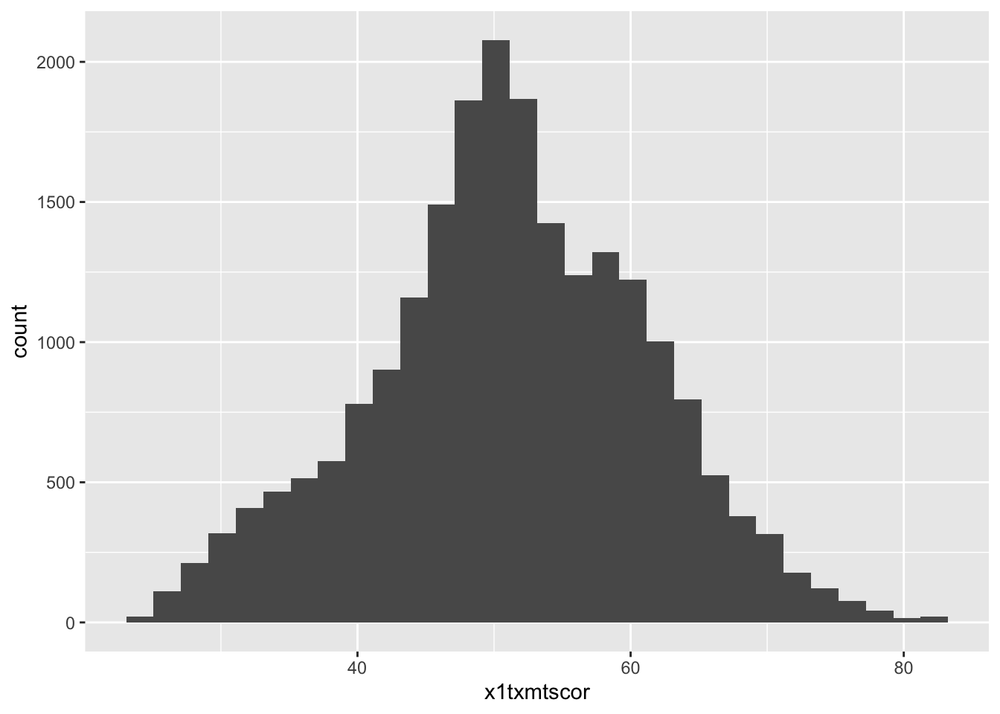
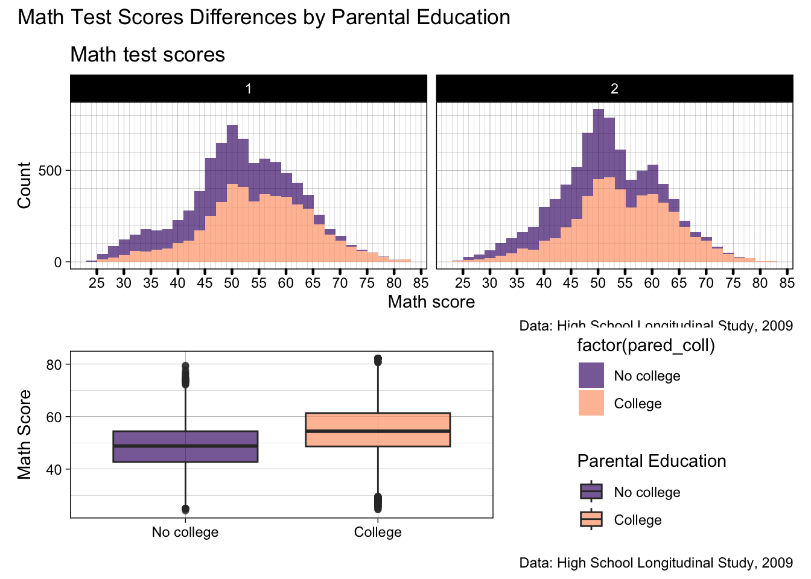

## You should have these packages already, we installed them our first lesson
## but if you're not sure, run this code just in case
install.packages(c("knitr", "rmarkdown", "quarto"))Reproducable Reports with Quarto
- In this lesson, we are going to cover the basics of creating fully reproducible reports with Quarto
- You may have heard about RMarkdown
.Rmdin other classes - Quarto is the replacement for RMarkdown
- It can do anything RMarkdown can do and a whole whole lot more!
- Plus, it’s easier to use!
- Quarto is still somewhat new, version 1.4 just came out you probably all still have 1.3 (it comes with RStudio as it’s made by the same company, Posit)
Quarto Documentation
- Quarto also comes with one of the best sets of documentation I’ve come across on their website, check it out here
- Fun fact, the whole website is a massive Quarto project, which is kind of meta!
- Rather than trying to re-explain something they put so clearly, we will look to this site for guidance throughout this lesson
Why Quarto over Word?
Up until now, you’ve likely written most of your assignments using a Microsoft Word or something similar
There are a few major reasons Quarto has most replaced Word for 90% of my work
- Integration with code/analysis
- This is the main one
- As you’ll see in this lesson, Quarto seamlessly integrates text with code output
- So any tables and plots you create will be integrated into the report
- No more spending hours copying your output from one screen to another and likely typing some of it wrong!
- You can even have the text you type update
- So any tables and plots you create will be integrated into the report
- As a result, if when reviewing your final paper you spot an error right at the start of your analysis, as you often will (I did with my first publication), you just correct it and everything else automatically updates
- Reproducibility/Transparancy
- As the code and text are integrated, it makes it easier to share and reproduce your results, there’s no way someone could fake a figure/table without it being obvious
- Zotero integration
- The way Quarto’s visual editor integrates with Zotero on your laptop is superb, Word does integrate with Zotero as well, but it’s not as smooth
- Zotero is an open source reference manager
- If you aren’t using a reference manager, you 110% should be
- Zotero is a fantastic choice, as it’s open-source and free, check it out here
- If you aren’t using a reference manager, you 110% should be
- If you have zotero on your computer, to cite anything in your Zotero library, you just type
@and you can search and add any article you have saved
- Version control with git
- As Quarto
.qmdfiles are plain text/code files, they’re very small and work well with git for version control- See the git extra credit lesson for more information on git
- One file, variety of formats
- Sometimes, you need to share your work in a variety of formats
- Word and PDF is pretty easy, you can just save as…
- But what if you’re asked to publish your research to a website?
- What if you want to work on HiPerGator so need your work in as
.ipynbJupyter Notebook?
- Quarto enables you to take the same work and switch formats easily and even publish to multiple formats at the same time
- You can also make presentations from as PowerPoint, PDF, or my new favorite, RevealJS
- Again, if you fix a mistake, all your tables and plots will be corrected automatically, a lifesaver 2 hours before you go on stage at ASHE!
Text Portions of a Quarto Report
- No matter how good your data viz skills are, the majority of most reports are still going to be text
- Text in Quarto reports is written as markdown text (that’s what the
mdpart of.qmdstands for) - Markdown is a relatively simple plain text way of formatting text
- Quarto provide a great overview of markdown basics on their site here, let’s take a look
Quarto Visual Editor
- However, Quarto also has a visual editor, which looks like a simplified Microsoft Word, with point and click options for everything
- You can toggle between
sourceandvisualmodes at the top left of any.qmdfile in RStudio - All the visual editor does is write actual markdown based on what you clicked
- If you want to learn markdown, flipping between the two is a great way to do that
- You can toggle between
- In my day to day life - If you start using Quarto on a regular basis, you’ll inevitably become familiar with markdown basics, as it is so much faster!
- If I’m writing extended passages of text, I usually use the visual editor (primarily for the Zotero referencing feature I metioned above)
- If you know markdown syntax (e.g., headings, bold, etc.), you can type it into the visual editor rather than clicking on options
- If I’m writing, I generally prefer the source editor
- If I’m writing extended passages of text, I usually use the visual editor (primarily for the Zotero referencing feature I metioned above)
- For this class, you should be able to use the visual editor for most of your needs, no need to learn markdown!
Quick Excercise
- Inside the Quarto template you downloaded at the top of the lesson write a few sentances descrbing your proposal for your reproducible report
- Add an appropriate header (e.g., “Introduction”)
- Add bold face around your dependent variable
- Make your data source name italic
Code Portions of a Quarto Document
- The text is all well and good, but, the real power of Quarto comes from the ability to integrate code into work
- There are two main ways of doing this
- Inline code chunks
- Sourcing
.Rscripts
Inline Code Chunks
- For shorter chunks of code such as printing tables and plots, or short calculations, you can create code chunks in the
.qmdfile- These are like you cut an
.Rscript up into little pieces and put them in between text - They still run like one continuous
.Rscript, from top to bottom- Anything you
<-assign in an earlier chunk will be available in later chunks
- Anything you
- The results/output of code in a chunk will print where the chunk is in the text in the rendered document
- You can add a code chunk by clicking on the insert code button along the top, or, by keyboard shortcut
- command + option + I on Mac
- ctrl + alt + I on PC
- Once inserted, you can name chunks for cross-referencing and set executation options to change if/how they output results, both of which are beyond the scope of this class
- These are like you cut an
- Let’s start out by reading in data, then making a simple ggplot of math test scores
- Since we want to see the results, we will just call it rather than assigning it to an object
- Note: We need to load packages in our quarto script every time
- Unless they are loaded by a script we source (see below)
library(tidyverse)
df <- read_csv(file.path("data", "hsls-small.csv"))
ggplot(data = df) +
geom_histogram(mapping = aes(x = x1txmtscor))
Quick Excercise
- Add a new code chunk to your Quarto document
- Read in the
all-schools.csvfrom thesch-testfolder- Make a line ggplot for math scores with colored lines for each school

- Okay, those are printing, but last week we put so much work into creating a pretty plot, do I really have to copy all that code?
- The answer is no!
Sourcing scripts
- Technically, you could do everything in code chunks, from data joining and cleaning right through to analysis
- But, this will get really long, and make it harder to skip around and navigate the text of your document while you’re editing
- A better solution is to
source()plainRscripts that have already been written - When you do this, any objects created in those scripts will then be in the environment and able to be added seamlessly to your Quarto document
- To demonstrate, let’s
source()our R script from last week’s lesson- There are two things that need to be right for this to work
- The script has to be able to be run top to bottom with no errors
- Anything that creates an error needs to be
##commented out
- Anything that creates an error needs to be
- You need to know where the file is
- In our case, because we used a slightly messy kitchen approach (see our setup lesson on reading data for a reminder) all our scripts should be in the top level of your project folder, so you should be able to source them by name
- If they’re somewhere else, you can use
file.path()like we use for data etc.
- If they’re somewhere else, you can use
- In our case, because we used a slightly messy kitchen approach (see our setup lesson on reading data for a reminder) all our scripts should be in the top level of your project folder, so you should be able to source them by name
- The script has to be able to be run top to bottom with no errors
- There are two things that need to be right for this to work
source("06-viz-ii.R")- Now, with that script sourced, we can call objects we created in that script, and they will appear in our Quarto document
- For example, if we
source()a script that joins and cleans data and leaves it assigned to an objectdf_clean, we can then calldf_cleanin a code chunk and it will be waiting - Remember right at the end of last week we saved our final plot to
patchand I said why was a surprise, this is why!- We simply call
patchand our fancy patchwork will print out beneath the chunk- Note, since we loaded the
patchworklibrary in the script we sourced, we don’t need to load it here
- Note, since we loaded the
- We simply call
- For example, if we
patch
- This logic is really useful to keep long streams of code out of your Quarto document
- You also probably have lot’s of code already written in an
.Rscript, and this is much easier than copy and pasting it all
Quick Exercise
source()04-wrangle-ii.R- print out the data object we made called
df_long
print(df_long)# A tibble: 72 × 4
school test year score
<chr> <chr> <chr> <dbl>
1 Bend Gate math 1980 515
2 Bend Gate read 1980 281
3 Bend Gate science 1980 808
4 Bend Gate math 1981 503
5 Bend Gate read 1981 312
6 Bend Gate science 1981 814
7 Bend Gate math 1982 514
8 Bend Gate read 1982 316
9 Bend Gate science 1982 816
10 Bend Gate math 1983 491
# ℹ 62 more rows- That covers the basics of quarto document content! No matter what output you choose, this all stays the same!
YAML Header Options
- The final thing to be aware of is the
YAMLheader, that stuff at the top of the.qmdfile - In your template, I have set some basic things up that you can change
- There are so, so, so, many options, many of which change with the format you are using
- Some basic ones to be aware of for now are
title:kind of self-explanatoryauthor:again, kind of self-explanatorydate:this can take a specific date, or, it “today” will use the current date when you render the documenteditor: visualdefaults to the visual editor, easier for noweditor_options:chunk_output_type: consoleJust means that when editing the document and running code chunks, the output will appear in the console (like it always has with R scripts) rather than appearing as a preview in the script- This is a personal preference, feel free to play around!
format: this is power of Quarto, there are so many options which will be discussed nextexecute:these are the default way we want code chunks to outputecho: FALSEmeans don’t print out the code (e.g., this site useecho: TRUE)message: FALSEmeans don’t print out information like when tidyverse reads in data- There’s a bunch more of these options, setting them in the YAML Header makes that the default behavior for the document, you can set them at the chunk level to only apply to that chunk
- You don’t need to alter these for this class, but if you want to learn more, see executation options documentation
Quick Exercise
- Change the title to something appropriate for your final report
- Change the author to your name
Quarto Output Formats
- As I said at the start of this lesson, Quarto has so many different output formats you can choose from
- The majority fall into three main categories
htmlpdf- Microsoft Office (
docxandpptx)
- We will mostly focus of office output for this class, but I will give a quick overview of the others first
- The majority fall into three main categories
html
htmlis the file format that web browsers read for almost every website you visit- This is probably my favorite output style, as it’s far less limited than the other types
- Fun fact: this entire website is built with Quarto as html output
- Click on the little GitHub icon in the lower right corner to see to
.qmdfiles
- Click on the little GitHub icon in the lower right corner to see to
- You can include fancy content like interactive graphics
- Fun fact: this entire website is built with Quarto as html output
- Unfortunately, the majority of work in academia (for now at least) still relies on traditional paper-based document formats, so we can’t justify spending much time on this today
- If you want to learn more about
htmloutput, start with the Quarto documentation on Quarto Websites and Reveal.js Presentations
pdf
- The first paper-based document format is straight to
.pdf - Traditionally, this has been dominated by LaTeX
- Students under Dr. Skinner’s version of the class used this
- Personally, I find LaTeX slow, unintuitive, and inflexible
- In Quarto 1.4 (the version that came out a couple of weeks ago), support for a new much more user-friendly pdf generator typst has been added
- I haven’t had chance to play around with this yet, but from first impressions I’m hopefull!
- You can also create pdfs straight from Quarto via word using an R script like this which I use for the syllabus
docx
docxoutput is, IMHO, the best starting place- When you render your Quarto document, the result is a
.docxfile that you can then open in word or send to a supervisor/advisor- For example, if I’m running the data analysis for a project, I can create all the plots and tables, write up the methods section, then pass to my advisor to fill in the literature sections
- Sure, straight to
.pdfis nice is everyone is working in Quarto, but often (sadly) they won’t be.docxis a just more practical option a lot of the time
- You still get a document rendered with all the tables and plots which will update if the data changes upstream
- Sure, straight to
- For example, if I’m running the data analysis for a project, I can create all the plots and tables, write up the methods section, then pass to my advisor to fill in the literature sections
- Plus, even if you craft the entire document in Quarto, it can be nice to have the option to run Grammarly on it in word, or tweak one little layout feature you can’t figure out how to get right in Quarto
- This is the output format I’d like you to use for your reproducible reports (unless you can convince me you need a different output)
- So let’s take a look through the Quarto documentation for
.docxoutput
- So let’s take a look through the Quarto documentation for
As I say, the Quarto documentation is fantastic, I’m not asking you to do anything beyond the default docx output for the class - But, if you want to, docx output is formatted by a template docx file, read more about those in the Word templates documentation
Rendering Quarto Reports
- To see the magic happen, we simply have to hit the “Render” button at the top of the Quarto file
- This will go from top to bottom of our file turning the text/markdown sections into formatted text, and the code output to
A Common Trap when Rendering Quarto Reports
- One thing that people always get tripped up on is when something runs while editing the Quarto document, and doesn’t when rendering/running it
- The main thing to be aware of is that when it starts to render, it will work with an entirely clean environment
- If you have anything (a plot, a dataframe) saved in your environment you can access that when running the chunks one by one
- When it renders, anything you call needs to created, either by
source()-ing a script that makes it, or by making it within an earlier code chunk - If you move chunks around, make sure you don’t try and call something before it’s been assigned!
- When it renders, anything you call needs to created, either by
- If you have anything (a plot, a dataframe) saved in your environment you can access that when running the chunks one by one
- The main thing to be aware of is that when it starts to render, it will work with an entirely clean environment
Basic Tables and Kable()s
One of the most common things you need when writing reports and/or papers are tables, whether than be descriptive statistics, results of a regression model, or even qualitative information about participants
There are many ways of creating tables in R
If you want to get fancy with customization,
gtandgtsummaryoffer more advanced customization optionsIf you’re looking for easy and consistent output from regressions and other models
stargazermight be what you’re looking forBut for now, we will focus on basic markdown tables and
kablekableextrais also an option if you want to customizekables outside what the basic package allows
Basic Markdown Tables
Basic markdown tables are somewhat like tables in word, you manually fill them in
- You could use inline code in one, but you will see why that would rarely be necessary when we look at
kable
- You could use inline code in one, but you will see why that would rarely be necessary when we look at
Before Quarto’s visual editor, making basic markdown tables was a real pain
They basically involve using a series of ————, ::::, and |||| to craft a table
- If you’re interested you can see more on the Quarto table documentation
With the visual editor, however, you can just click on “Table” from the drop down menu, and write out the contents of your table
This is great for certain things, such as a table where we describe something qualitatively, such as syllabus for this class (which uses a markdown table).
Tables from data frames with kable
- So far in this class, there have been plenty of times we have used tables to answer questions, when we have had them print out the console, e.g.
## Read in using .dta so we have nice labels
df <- haven::read_dta("data/hsls-small.dta") |>
drop_na(x1txmtscor)
df |>
summarize(mean(x1txmtscor))# A tibble: 1 × 1
`mean(x1txmtscor)`
<dbl>
1 51.1This is kind of a table, but, when we render our Quarto document it doesn’t look great
Luckily, the fix is really easy
First, we load the
knitrpackageSecond, we just pipe our output into
kable()
library(knitr)
df |>
summarize(mean(x1txmtscor)) |>
kable()| mean(x1txmtscor) |
|---|
| 51.10957 |
kable()is relatively basic in terms of customization, but, it can do most things you’re going to needFor now, we will address the two most obvious issues with this table, the column names and the rounding (or lack thereof)
- We just need to add two simple arguments to our
kable()
- We just need to add two simple arguments to our
df |>
summarize(mean(x1txmtscor)) |>
kable(col.names = c("Mean of Math Score"),
digits = 2)| Mean of Math Score |
|---|
| 51.11 |
kable()will turn any data you pass to it into a table, let’s make a slightly more interesting summary table- Notice, we will use
as_factor()to get the labels to show upfactor()allows us to make a factor and apply our own labelsas_factor()works withhavenlabeled data and gets the labels out
- Notice, we will use
df |>
group_by(as_factor(x1region), as_factor(x1sex)) |>
summarize(mean = mean(x1txmtscor),
median = median(x1txmtscor),
min = min(x1txmtscor),
max = max(x1txmtscor)) |>
kable(col.names = c("Region", "Sex", "Mean", "Median", "Min", "Max"),
digits = 2,
caption = "Math Score by Region and Sex")| Region | Sex | Mean | Median | Min | Max |
|---|---|---|---|---|---|
| Northeast | Male | 52.13 | 51.97 | 24.9468 | 82.1876 |
| Northeast | Female | 52.22 | 52.00 | 25.5304 | 78.9298 |
| Midwest | Male | 51.23 | 51.18 | 24.0999 | 82.1876 |
| Midwest | Female | 51.22 | 50.94 | 24.7966 | 82.1876 |
| South | Male | 51.01 | 51.02 | 24.0180 | 82.1876 |
| South | Female | 51.07 | 50.86 | 24.5797 | 81.0926 |
| West | Male | 50.04 | 49.80 | 24.0744 | 82.1876 |
| West | Female | 50.26 | 50.19 | 25.0437 | 78.9298 |
- Much better!
Tips for Technical Writing & Citations
- One of the most frustrating things in Microsoft Word is technical aspects of writing such as equations needed for quantitative research articles
- By no means do you need to write equations in your project for this class, but this is something you’ll need in future stats classes
- As always, the Quarto documentation does a great job of explaining the basics of technical writing, so let’s take a look!
- I mentioned this above, but this page also discusses the Zotero integration in a bit more depth as well
- Good news! Through the quick exercises in this class, you should have some of this assignment done!
In a Quarto Document (you should continue using the template you started today)
Should already be done
- Write a few sentences describing your proposal for your reproducible report
- Add an appropriate header (e.g., “Introduction”)
- Add bold face around your dependent variable
- Make your data source name italic
- Change the YAML Header title to something appropriate for your final report
- Change the YAML Header author to your name
New steps
- Read in at least one data file you intend to use for your final project
- Write a few sentences describing where you got the data from
- Add an appropriate header (e.g., “Data”)
- Summarize one or more continuous variable including
- mean
- standard deviation
- minimum
- maximum
- Summarize one or more categorical variables including
- count for each category
- percentage of count for each category
- Hint: Remember the easier way of getting percentages from assignment 3 solution
- Save the file as
report.qmd
Congratulations, you’ve officially started the Quarto document for your final project!
Once complete, turn in the .qmd script (no data etc.) to Canvas by the due date (Sunday 11:59pm following the lesson). Assignments will be graded on the following Monday (time permitting) in line with the grading policy outlined in the syllabus.